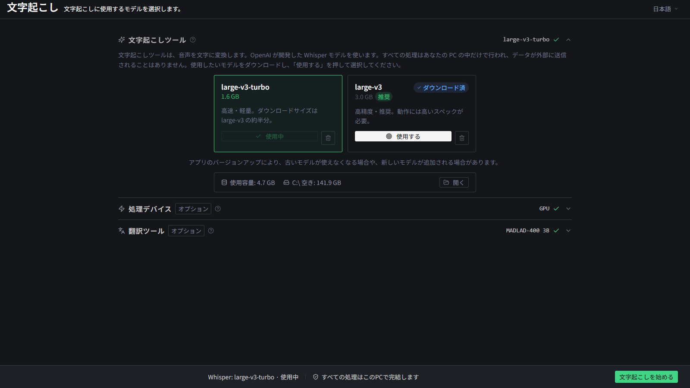
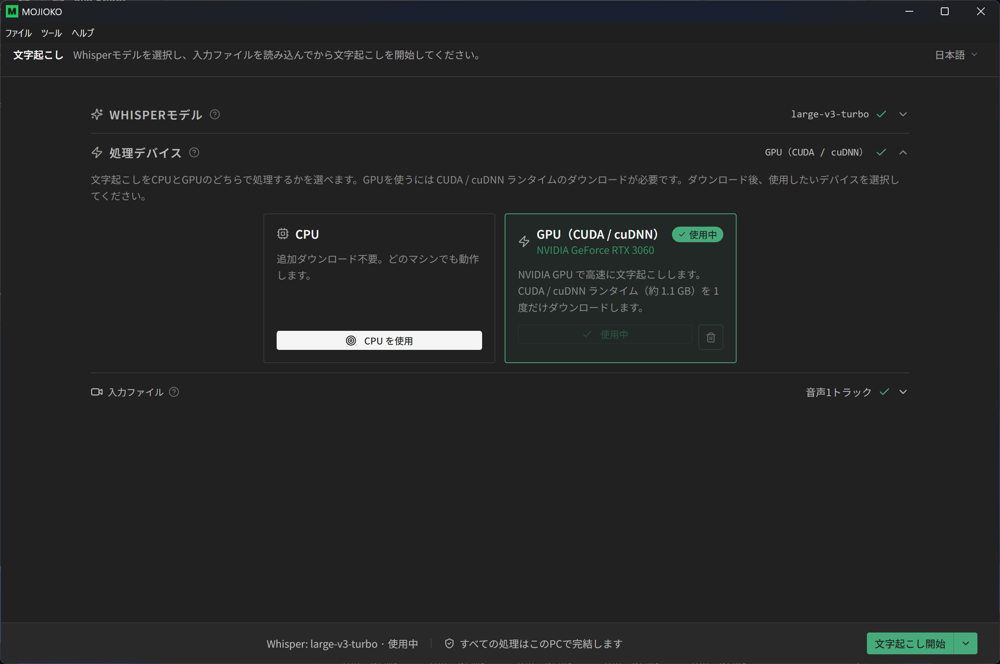
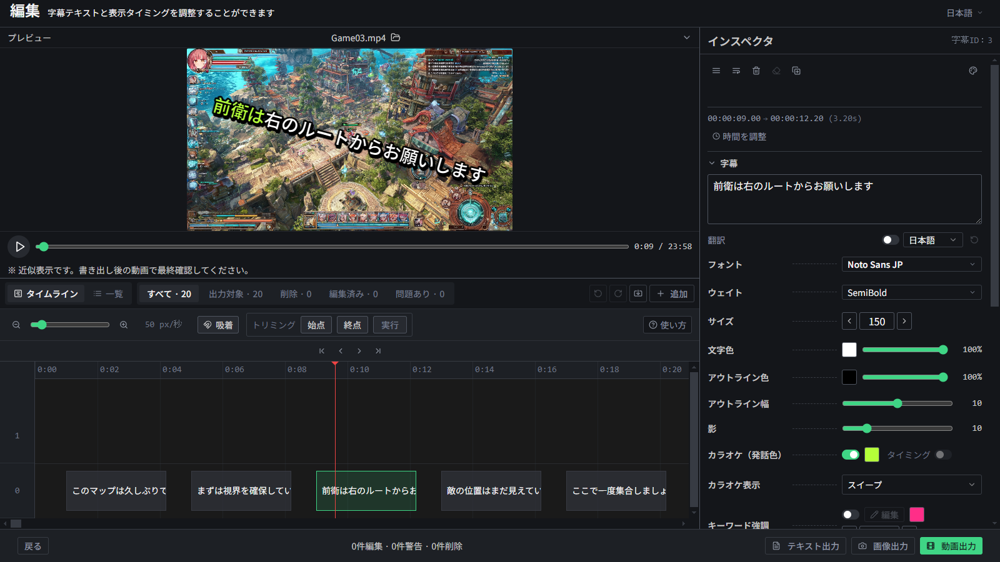
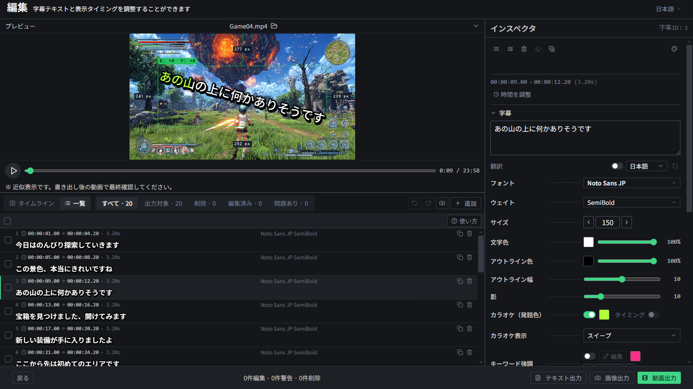
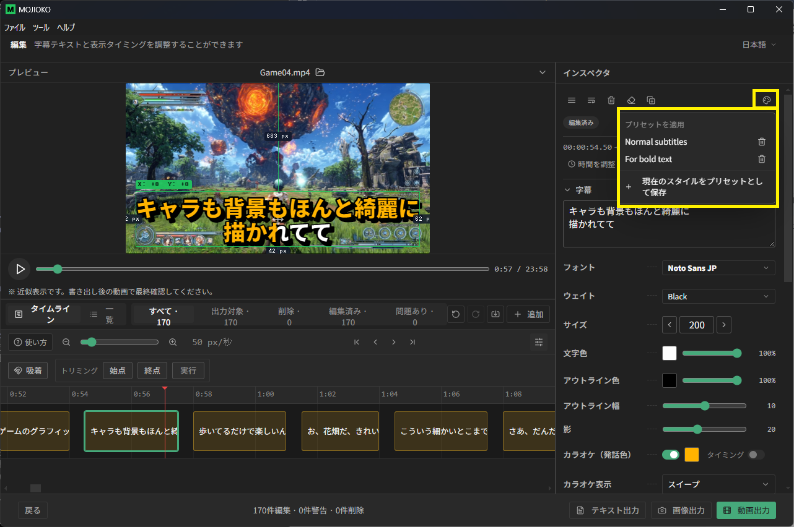
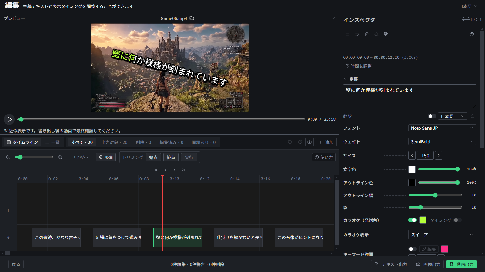

主な機能

高精度な自動文字起こし
動画や音声から、AIが自動で文字を書き起こします。使っているのは、OpenAI が開発した「Whisper」という高精度な音声認識AI。長い動画でも、話している内容をまとめてテキスト化できます。
動画ファイル・音声ファイルのどちらにも対応。複数の音声が入った動画でも、文字起こししたい音声を選べます。
💡 マルチトラック音声とは？ゲーム音とマイク音声など、複数の音が別々に記録された動画のこと。MOJIOKO なら、その中から声だけを選んで文字起こしできます。

GPU アクセラレーションの画面(images/j-gpu.png)
GPU アクセラレーション
NVIDIA GPU を使って、文字起こしを大幅に高速化できます。長時間の動画も、CPU よりずっと短時間で処理できます。
初回のみ、CUDA / cuDNN ランタイム（約 1.1 GB）をアプリ内からダウンロードします。事前の CUDA インストールは不要です。
GPU がなくても CPU で問題なく動作します。RTX 50 番台（Blackwell）を含む最新世代の NVIDIA GPU にも対応。
💡 制限事項・詳細NVIDIA 製 GPU 限定です（AMD／Intel GPU は非対応）。詳しくは使い方ガイドの GPU アクセラレーションの項目をご確認ください。
多彩な字幕編集
テキストも見た目も自由に編集
書き起こしたテキストの修正はもちろん、フォントの変更、文字の大きさ・色、アウトラインの色・太さまで、字幕の見た目を細かく調整できます。

タイムラインで表示タイミングを調整
字幕が表示される長さを、タイムライン上でドラッグするだけで直感的に変更できます。

一覧表示でまとめて確認・編集
書き起こした字幕を一覧で見渡して、まとめて確認・一括編集ができます。字幕が数千件あっても軽快に動きます。

スタイルプリセットの画面(images/j-preset.png)
スタイルプリセットで使い回す
作り込んだ見た目を保存して、他の字幕にワンクリックで適用できます。
💡 タイムラインとは？動画の時間の流れを横棒で表したもの。どの字幕がいつ表示されるかを、視覚的に編集できます。

テキスト・SRT で書き出し
書き起こしたテキストを、テキストファイルや SRT 形式で書き出せます。
SRT で書き出せば、DaVinci Resolve などの動画編集ソフトに、字幕の開始・終了時間ごと取り込めます。字幕をタイムラインに載せる作業がぐっと楽になります。
書き出したテキストは、VOICEVOX などの音声合成ソフトに読み込んで、ずんだもんなどの音声を作る、といった使い方もできます。
💡 SRT形式とは？字幕の「文章」と「表示する時間」をセットで記録した、字幕ファイルの標準形式。多くの動画編集ソフトや動画サイトが対応しています。

字幕を焼き込んで動画出力
編集した字幕を、動画に直接焼き込んで書き出せます。
複数の音声を1つにまとめて出力できます。編集後の動画に字幕を焼き込んで、そのまま投稿できる形で書き出せます。
💡 焼き込みとは？字幕を映像の一部として動画に埋め込むこと。焼き込んだ字幕は、どの環境で再生しても必ず表示されます。